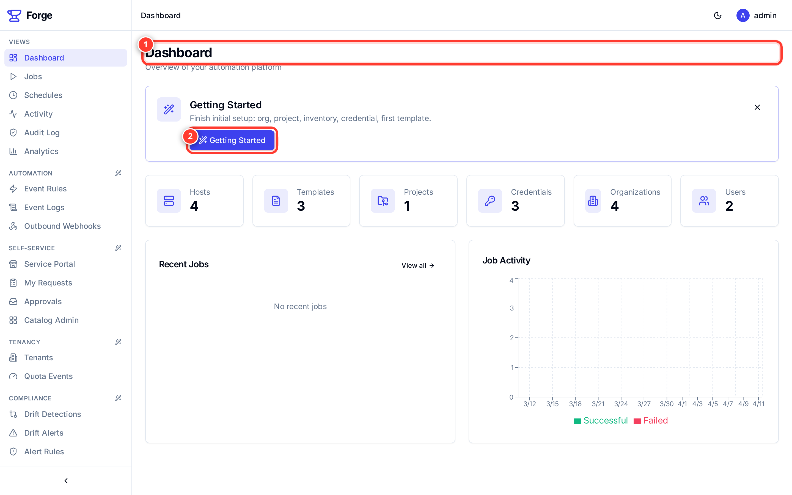
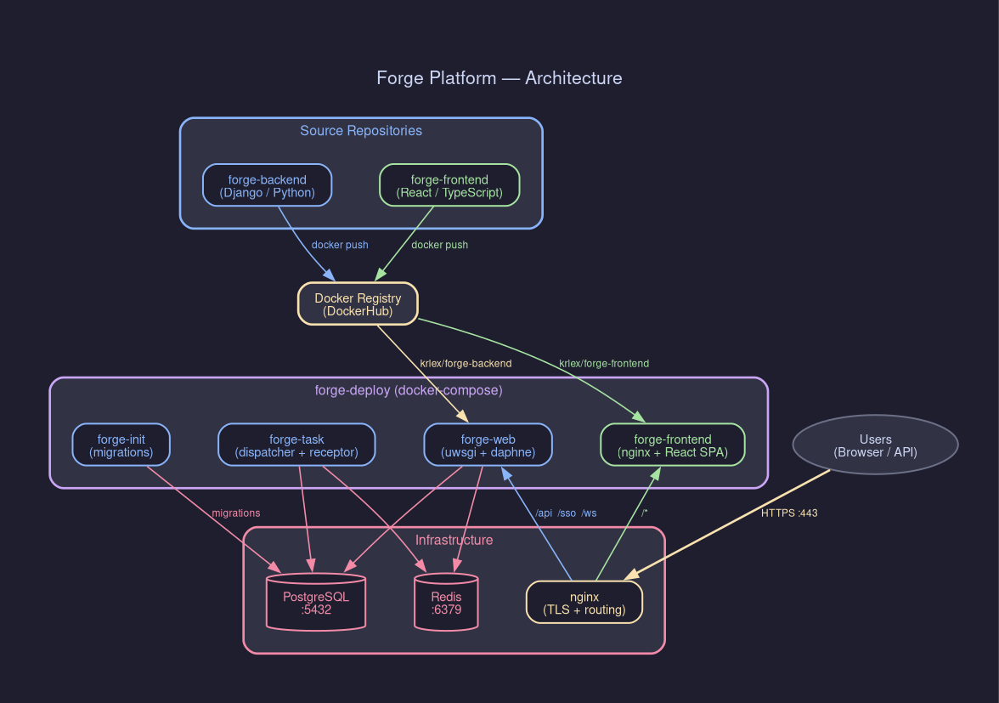

Open-source platform for Ansible automation with event-driven workflows, drift detection, policy-as-code, self-service portal, and AI assistant. Deploy with Docker Compose in minutes.
Built on top of AWX 24.6.1 with enterprise-grade features that the community has been asking for.
HMAC-verified webhook rules with Jinja2 conditions that automatically trigger jobs, notifications, or custom actions when events occur.
Automatic configuration drift detection with severity classification, alert rules, and CSV compliance reports. Know when infrastructure deviates.
Open Policy Agent integration with Rego rules evaluated before every launch. Deny or warn based on your organization's policies.
Curated automation catalog with approval workflows. End users browse and request automations without needing template access.
Per-organization quotas, custom branding (logo, colors, domain), and usage tracking. Isolate teams with tenant-aware access control.
Privacy-first AI chat powered by local Ollama LLM with RAG. Get contextual help, error analysis, and documentation search without sending data to the cloud.
FIDO2 passwordless authentication with per-organization MFA enforcement. OIDC SSO support with Keycloak, Azure AD, Okta.
Pre-launch security scanning with ansible-lint, checkov, and pip-audit. Block risky automations before they run with configurable severity thresholds.
Built-in distributed tracing and metrics with OpenTelemetry. Zero vendor lock-in, zero overhead when disabled. Works with Jaeger, Grafana, Datadog.
Survey choices resolved at runtime from database queries, external APIs, or Jinja2 templates. No more hardcoded dropdown values.
Tamper-proof security audit log with CSV and SIEM export. Track credential access, authentication events, and permission changes.
Complete rewrite with React 18, TypeScript, Tailwind CSS, and TanStack Query. Real-time WebSocket updates, dark mode, guided setup wizards.
A clean, modern interface that gets out of your way. Browse all screenshots in the User Handbook.

Docker Compose deployment with separate web, task, and frontend containers. Scale horizontally with Receptor mesh.

Features that set Forge apart from AWX, Ansible Automation Platform, and alternatives.
| Feature | Forge | AWX | AAP 2.5+ | Ascender | Semaphore |
|---|---|---|---|---|---|
| Docker Compose deploy | Yes | No | No | Yes | Yes |
| Dynamic surveys | Yes | No | No | No | No |
| Event-driven automation | Yes | No | Yes | No | No |
| Drift detection | Yes | No | No | Yes | No |
| AI assistant | Yes | No | Yes | No | No |
| Self-service portal | Yes | No | Yes | No | No |
| Policy-as-Code (OPA) | Yes | No | Planned | No | No |
| OIDC + WebAuthn | Yes | Partial | Yes | Partial | No |
| Multi-tenancy | Yes | No | Yes | No | No |
| IaC scanning | Yes | No | No | No | No |
| OpenTelemetry | Yes | No | No | No | No |
| Modern UI (React 18) | Yes | Legacy | Yes | Legacy | Yes |
| Open source | Yes | Yes | No | Partial | Yes |
One command to deploy the entire platform with Docker Compose.
# Clone the deployment repository git clone https://github.com/forgeplatform/forge-deploy.git cd forge-deploy # Configure environment cp .env.example .env nano .env # Set POSTGRES_PASSWORD, FORGE_SECRET_KEY, etc. # Start the platform docker compose up -d # Wait for initialization (~2 minutes on first run) docker compose logs -f forge-init # Open in browser open https://localhost
See the Deployment Guide for production setup with TLS, backups, and scaling.
Forge is free, open-source, and designed for teams that need more than AWX can offer.